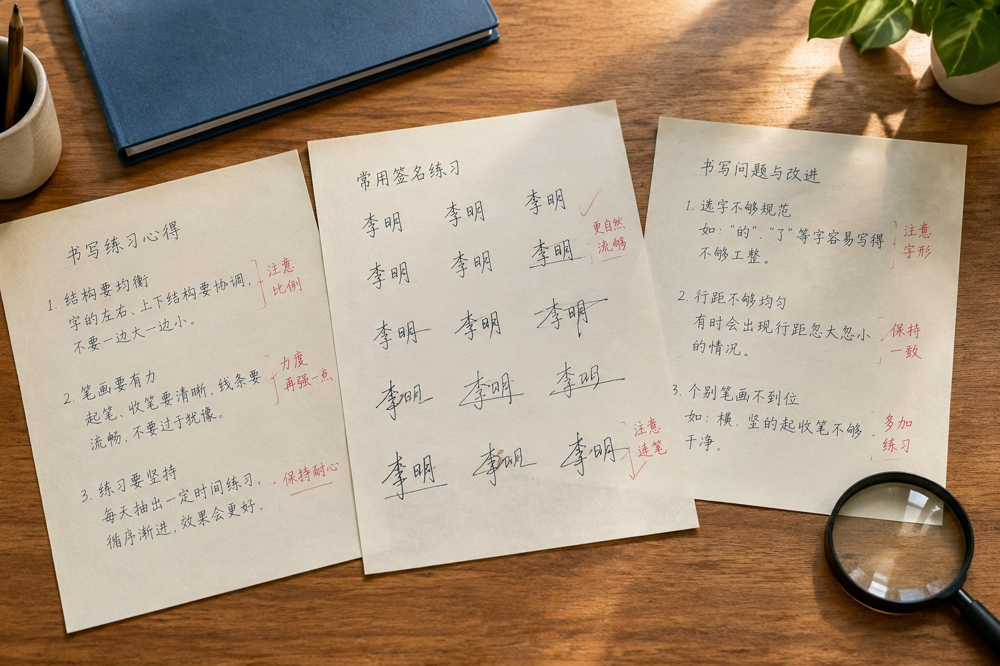

模仿笔迹与模仿签名资料完成校订，旧文章保留原链接
10月13日，模仿笔迹网完成一轮文章校订。此次调整涉及主站业务栏目和城市站已有内容，重点处理不同文章中重复的资料说明，并补充模仿笔迹、模仿签名、模仿签字与笔迹鉴定各自需要关注的细节。旧文章仍使用原来的链接，已收藏的页面可以继续打开。

同样是手写材料，文章里的重点不再混在一起
本次检查发现，部分旧文章虽然讨论的场景不同，正文却反复使用相近的材料整理段落。例如，连续正文的整页照片、正式签名和快速签字的版本区别，以及原件与扫描图的关系，原先有些说明写得过于笼统。读者点开不同标题，容易看到相似的内容，却找不到标题中那个具体问题的回答。
校订后，模仿笔迹栏目中有关完整页面的文章，把行距、留白、落款位置与局部笔画分开说明；模仿签名栏目中的版本文章，则分别讨论正式落款、日常签收和快速登记。涉及模仿签字的段落保留这个名称，不再用其他业务词替换，便于读者按自己的需求查找。
笔迹鉴定资料说明补回原件与图片的区别
笔迹鉴定相关文章此次补充了原件、扫描文件和聊天图片之间的差别。页面上看得到一个字，不等于图片已经保留全部细节：聊天软件可能压缩照片，扫描时可能改变颜色，局部裁剪也可能丢掉日期和上下文。文章因此把这些情况分别说明，避免读者把几种材料当作同一份文件。
有关材料的形成时间、来源和版本，仍应以手头真实记录为准。文章提供的是整理与阅读参考；缺少来源说明的地方，不会因为照片清晰就自动补出答案。这也是本轮校订在笔迹鉴定内容中着重补充的一点。
原链接继续使用，新入口在首页和资讯中心
此次更新没有给旧文章换地址。主站和城市站仍沿用原有栏目结构，读者可以从模仿笔迹、模仿签名或笔迹鉴定栏目进入，再查看与具体材料有关的文章。网站同时校正了栏目文章数量，并检查站内搜索与内容索引，让标题、摘要和页面地址能够对应。
本条更新归入资讯中心的“服务动态”。首页最新文章区域、服务动态列表和站内搜索同步收录这条新闻。后续已有文章如需补充，将继续在原页面修改正文并标明更新时间，避免同一个问题拆成多篇内容相近的文章。